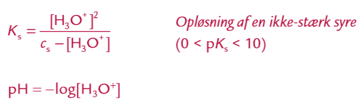
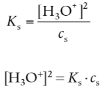

Stærk syre (pks < 0)
-
, hvor
er den formelle koncentration af syren.
Mellemstærk og svag syre (0 < pks < 4

Specelt for svage syrer (4 < pKs < 10)
- pH = ½ ⋅ (pKs - log(c_s))
- Da:

Pufferopløsning (syre base reaktion)
B og S er korresponderende syre baser.